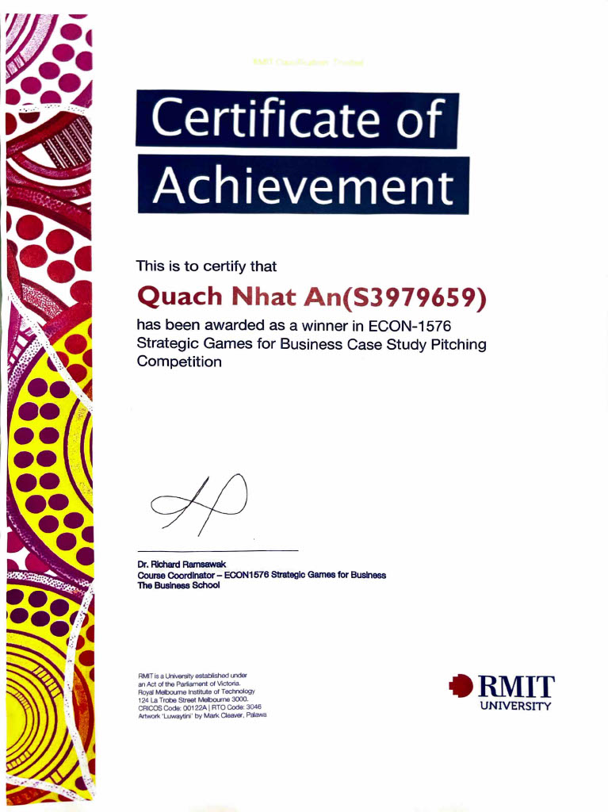

A strategic pitch and top-performing course assignment analysing Beiersdorf’s position against Unilever in Vietnam’s skincare market, using a simultaneous-move game with repeated interactions, mixed-strategy analysis, and Bayesian equilibria.
Vietnam’s FMCG market presented a clear strategic tension for Beiersdorf: online channels were expanding faster, while offline channels still offered higher margins and stronger retail economics. Rather than treat this as a simple binary choice, our analysis modelled the problem first as a mixed-strategy game under complete information, then extended it through Harsanyi transformation into a Bayesian game under uncertainty about Unilever’s type. Sensitivity analysis was used to test how stable the recommendation remained under changing cost and channel assumptions. Together, the analysis supported an omnichannel recommendation shaped by both profitability and strategic uncertainty.
The game was the framework. The evidence was the argument. The delivery was the edit.
Mapped the overlap between Beiersdorf and Unilever across shared skincare categories and converging channels in Vietnam’s FMCG market. The central trade-off was clear: online channels offered faster growth, while offline channels remained more profitable and more important for preserving retailer relationships.
Framed the decision as a simultaneous-move, repeated game in which both firms had to choose between pushing online or preserving offline strength. Built the payoff structure around channel economics, investment costs, competitive response, and profitability.
Solved for mixed-strategy Nash equilibrium, then tested how the result changed under different assumptions about technology investment intensity and offline discounting. This helped identify which parts of the recommendation were stable and which depended heavily on assumptions.
Extended the model into a Bayesian game by considering different possible Unilever types, then used those outcomes to refine the strategic recommendation. The final recommendation was not a simple channel switch, but a move toward omnichannel execution while preserving profitable offline relationships.

Industry-evaluated strategic pitch — selected by Beiersdorf regional representatives and company employees.
Live Q&A with industry judges — model held under pressure.
Led the game-theoretic framing, equilibrium analysis, and final pitch delivery.